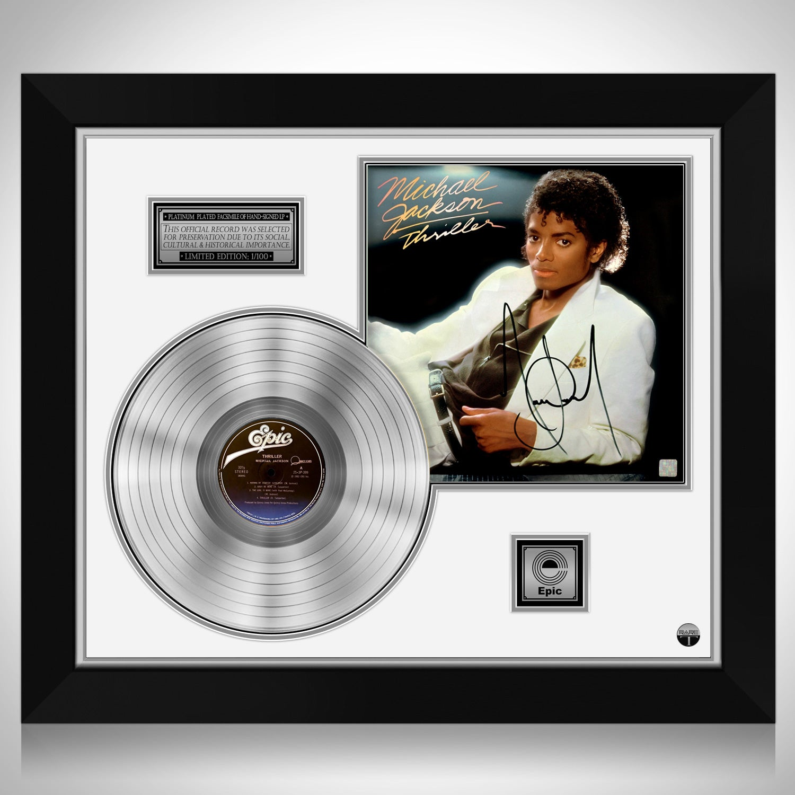

Šta je “Platinum” sertifikat?
RIAA uvodi “Platinum” 1976. kao viši nivo za izuzetno velike tiraže (u SAD tradicionalno 1.000.000 primeraka za albume u to vreme). Pragovi se razlikuju po zemljama i menjali su se tokom decenija. Prvi RIAA platinasti album bio je često navоđen Eagles — Their Greatest Hits (1971–1975) (1976). Platinasta ploča je muzičko priznanje koje se dodeljuje izvođačima i izdavačima kada prodaja nekog albuma ili singla dostigne određeni, viši prag od onog potrebnog za zlatnu ploču. Dok je zlatna ploča predstavljala prvi institucionalizovani znak masovnog uspeha, platinasta ploča je uvedena da bi označila još veći komercijalni i kulturni fenomen – tiraže od više miliona primeraka. Sam naziv i simbolika dolaze iz ideje da je platina plemenitiji i ređi metal od zlata, pa samim tim i prodajni uspeh koji nosi tu oznaku ima veću težinu. Uvođenje priznanja U Sjedinjenim Američkim Državama organizacija RIAA (Recording Industry Association of America) uvela je zvanično priznanje Platinum Record 1976. godine. Povod je bio ogroman uspeh albuma Eagles – Their Greatest Hits (1971–1975), prvog izdanja koje je zvanično dobilo platinastu nagradu. Ubrzo zatim, i druge zemlje su uvele slične standarde kroz svoje muzičke asocijacije (npr. BPI u Velikoj Britaniji, BVMI u Nemačkoj). Kriterijumi Kriterijumi se razlikuju po zemljama i periodima, ali osnovna logika je uvek ista – platinasta ploča znači veći broj prodatih primeraka od zlatne. SAD (RIAA): Album / singl = 1.000.000 primeraka (1 milion). Double Platinum = 2 miliona, Triple Platinum = 3 miliona, itd. Diamond = 10 miliona i više. Velika Britanija (BPI): Album = 300.000 primeraka, Singl = 600.000 primeraka. Nemačka (BVMI): Album = 200.000 primeraka, Singl = 400.000 primeraka. Jugoslavija i Srbija: u vreme kada je muzičko tržište bilo bazirano na pločama i kasetama, platinasta ploča se dodeljivala za tiraže od 100.000+ primeraka (broj je varirao po periodu i izdavaču). U 21. veku kriterijumi su prilagođeni digitalnoj eri: streaming se takođe računa, gde se određeni broj preslušavanja (npr. 1500 streamova) računa kao ekvivalent jednoj prodatom jedinici. Kulturni značaj Platinasta ploča je mnogo više od industrijskog priznanja – ona je statusni simbol izvođača. Dobiti platinu znači da je muzika postala masovni fenomen, da je izvođač dostigao ogroman broj slušalaca i da je njegovo delo deo globalne kulturne memorije. U praksi, platinaste ploče se često uramljuju, presvlače platinastim sjajem i dodeljuju izvođačima na ceremonijama, turnejama ili u promotivne svrhe. Zidovi mnogih muzičkih studija, kuća slavnih pevača i muzejskih postavki ukrašeni su upravo ovim priznanjima. Poznati dobitnici Eagles – Their Greatest Hits (1971–1975) – prvi album koji je 1976. dobio platinastu ploču; kasnije je proglašen i dijamantnim. Michael Jackson – Thriller – najprodavaniji album svih vremena, sa višestrukim platinastim i dijamantnim statusom. The Beatles – gotovo svi njihovi albumi i singlovi stekli su višestruke platinaste statuse. Madonna, Whitney Houston, Queen, Pink Floyd, Nirvana, Adele – izvođači čiji su albumi i singlovi prodavani u desetinama miliona primeraka širom sveta. U bivšoj Jugoslaviji i kasnije Srbiji, platinaste ploče dobijali su izvođači koji su postizali tiraže od 100.000–500.000 primeraka, što je bio ogroman uspeh za regionalno tržište – primeri su Bijelo Dugme, Lepa Brena, Zdravko Čolić. Danas U današnje vreme, kada fizička prodaja više nije dominantna, platinasta ploča je dobila novu dimenziju: Brojke se kombinuju sa digitalnim preuzimanjima i streamingom. Platforme poput Spotify i Apple Music postale su deo kalkulacije. Iako su tiraži fizičkih ploča i CD-a manji, platinasta nagrada i dalje nosi isti prestiž. Za savremene izvođače, platinasta ploča je dokaz globalnog dometa pesme ili albuma, dok je za publiku ona i dalje sinonim za muziku koja je obeležila epohu.
Katalog — Platinum
| # | Omot | Izvođač | Naslov | Godina | Label | Katalog br. | Format | Nivo | Država | Stanje | Cena | Napomena |
|---|---|---|---|---|---|---|---|---|---|---|---|---|
| 1 |  | Michael Jackson | Thriller | 1982 | Epic | QE 38112 | LP | Platinum | US | VG+ | — | Najprodavaniji album |
| 2 |  |
AC/DC | Back in Black | 1980 | Atlantic | SD 16018 | LP | Platinum | US | EX | — | Hard rock klasik |